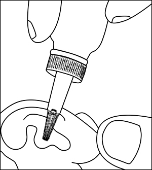

|
 |
| ОТИПАКС® (OTIPAX®) lidocaine, phenazone капли ушные | ||||||||
|
Клинико-фармакологическая группа: Препарат с противовоспалительным и местноанестезирующим действием для местного применения в ЛОР-практике Номер и дата регистрации: П N011568/01 от 05.10.11 Код ATX: S02DA30 |
Владелец регистрационного удостоверения: зарегистрировано и произведено Представительство: | |||||||
Форма выпуска, состав и упаковка ◊ Капли ушные в виде прозрачного, бесцветного или желтоватого раствора с запахом спирта.
Вспомогательные вещества: натрия тиосульфат - 1 мг, этанол - 221.8 мг, глицерол - 709 мг, вода - 18.2 мг. 16 г - флаконы из янтарного стекла (1) с капельницей (в блистере ПВХ/бумага) - коробки картонные. Возможно наличие контроля первого вскрытия. | ||||||||
| ||||||||
Описание препарата основано на официально утвержденной инструкции по применению и утверждено компанией-производителем для издания 2023 г. | ||||||||
Фармакологическое действие |
Фармакокинетика |
Показания |
Режим дозирования |
Побочное действие |
Противопоказания |
Беременность и лактация |
Особые указания |
Передозировка |
Лекарственное взаимодействие |
Условия хранения и сроки годности |
Условия реализации
Фармакологическое действие
Феназон обладает противовоспалительным и анальгезирующим действием. Лидокаин обладает местноанестезирующим действием. Показания
Для местного симптоматического лечения и обезболивания у взрослых и детей с рождения при среднем отите с неповрежденной барабанной перепонкой, в т.ч. при:
Режим дозирования
Препарат применяют местно, путем закапывания в наружный слуховой проход на стороне поражения. Детям с рождения и взрослым - по 4 капли 2-3 раза/сут.  Во избежание соприкосновения холодного раствора с ушной раковиной флакон перед применением следует согреть в ладонях. Продолжительность лечения препаратом Отипакс® - не более 10 дней, после чего следует пересмотреть назначенное лечение. Побочное действие
Возможно: местные аллергические реакции, раздражение и гиперемия слухового прохода. Пациенту следует сообщать лечащему врачу обо всех случаях возникновения нежелательных реакций, не указанных в инструкции. Противопоказания
С осторожностью Перед началом применения препарата необходимо убедиться в целостности барабанной перепонки. В случае применения препарата при перфорированной барабанной перепонке препарат может вступить в контакт с органами среднего уха и привести к возникновению осложнений. Применение при беременности и кормлении грудью
При неповрежденной барабанной перепонке и правильном способе применения препарата вероятность поступления действующих веществ в системный кровоток крайне низка. В связи с этим, в отстуствие противопоказаний, применение препарата Отипакс® беременными женщинами и женщинами в период грудного вскармливания возможно. Особые указания
В целях профилактики осложнений, перед началом применения препарата Отипакс® рекомендуется консультация врача-оториноларинголога для исключения перфорации барабанной перепонки. Если симптомы заболевания ухудшаются или отсутствует улучшение, через 2-3 дня лечения необходима повторная консультация врача. При первом применении препарата или возобновлении лечения особых действий не требуется. Дополнительных или особых действий при пропуске одной или нескольких доз препарата, а также при его отмене не предусмотрено. Спортсменам необходимо учитывать, что препарат Отипакс® содержит действующее вещество, которое может дать положительный результат при допинг-контроле. Специальные меры предосторожности при уничтожении неиспользованного препарата не требуются. Влияние на способность к управлению транспортными средствами и механизмами Отипакс® не оказывает влияния на способность управлять транспортными средствами и механизмами. Лекарственное взаимодействие
Сведения о клинически значимом взаимодействии с другими лекарственными препаратами и/или пищевыми продуктами отсутствуют. |
||||||||
Вернуться наверх |
||||||||
Copyright © Справочник Видаль «Лекарственные препараты в России», Москва, Россия